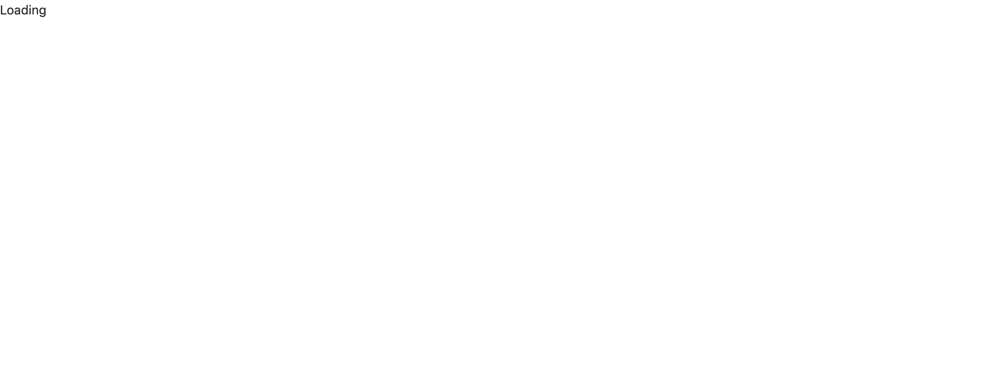
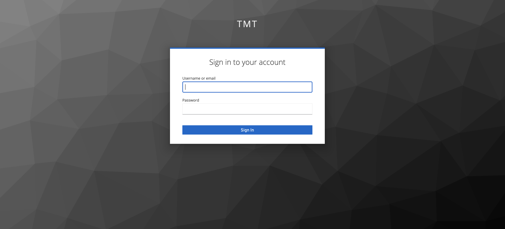

Creating Gateway UI Application
This flow demonstrates how to use the template to create our project, how to add UI components for adding particular features, and how to build and test it.
Generate Application
First we need to generate a scaffolding application using our giter8 template:
g8 tmtsoftware/esw-gateway-ui-template.g8 --project_name=sample
This will generate a sample folder with docs and src folders. For a sanity check, let’s go ahead and build the frontend created by the template. This will also help ensure you have the necessary tools installed.
Compile the Frontend
The sample/src sub-folder is where your frontend application is located. It uses Typescript, React and node. Make sure node version v16.0.0 or higher is installed in your machine. Let’s compile our generated application.
cd sample
npm install
npm start
You will be greeted with the following screen.

This tutorial uses the current ESW.UISTD selections for user interface languages, libraries, and tools. These selections will be reviewed and updated once again as part of ESW Phase 2.
Open in Development Environment
At this point, you may want to open the project in an Integrated Development Environment (IDE), such as Intellij, if you are using one. The template creates a Typescript/npm-based frontend. We recommend VS Code or Intellij.
To open the UI project in VS Code, click on File->Open. To open the UI project in Intellij, click on File->New Project from Existing Sources
Then browse to the UI directory, open the sample project. It should have a package.json file in it.
Create the UI
In this section, we will begin constructing our browser-based UI using React components in Typescript. We will start by adding a login component.
The frontend tutorial uses functionality from the ESW-TS library. The documentation for ESW-TS can be useful when building your UI. ESW-TS documentation can be found here.
Create login component
Use of the TMT Command Service via the UI Gateway requires authentication. The user must login via the TMT AAS login page, so we will add a login component from the ESW-TS library. Create a Login.tsx file in the src/components folder which will redirect the user to the TMT login page. Later we will use this Login Component in Main.tsx.
Copy the full snippet shown below & paste it in Login.tsx
- Typescript
-
source
import React, { useEffect } from 'react' import { useAuth } from '../hooks/useAuth' export const Login = (): JSX.Element => { const { login } = useAuth() useEffect(login, [login]) return <div>Loading...</div> }
Update Main & App component with authentication
First, add the component to our UI by updating the Main.tsx component in /src/components.
Copy the full snippet shown below and replace the contents in Main.tsx.
- Typescript
-
source
import * as React from 'react' import { useAuth } from '../hooks/useAuth' import { Login } from './Login' export const Main = (): JSX.Element => { const { auth } = useAuth() if (!auth) return <div>Loading</div> const isAuthenticated = auth?.isAuthenticated() ?? false return isAuthenticated ? ( <div style={{ display: 'flex', placeContent: 'space-around', paddingTop: '2rem' }}> Hello world </div> ) : ( <Login /> ) }
Here, you will see that there is a check to see if the user is authenticated, and if not, the login component will be shown. If the user is authenticated, the normal functionality of the app is presented, which right now, is just the Hello World page.
In order for our main component to have access to authentication logic from ESW-TS, we need to add a context provider to the component. We do this when the component is constructed at the top level. We will wrap our Main application with AuthContextProvider from esw-ts in App.tsx as shown below
Copy the snippet within the return statement from the following & update App.tsx.
- Typescript
-
source
import { AuthContextProvider, LocationService, loadGlobalConfig } from '@tmtsoftware/esw-ts' const App = (): JSX.Element => { // .. // .. const { error, data: initialised } = useQuery(() => loadGlobalConfig().then(() => true) ) return initialised ? ( <div> <LocationServiceProvider locationService={locationService}> <Router basename={basename}> <AuthContextProvider> <Main /> </AuthContextProvider> </Router> </LocationServiceProvider> </div> ) : ( <div>Loading...</div> ) }
After adding this section, run the following command to see the progress that we made till now.
npm start
You should now see Loading... on the browser screen.

This is because the UI is now trying to find the AAS authorization server, but we have not yet started CSW services. We will start them now, as well as the UI Gateway which will be needed for our subsequent flows.
Starting backend services
Start the Location Service with the Authorization and Authentication Service, Config Service & the Event Service.
cs install csw-services
csw-services start -k -c -e
Start the UI Gateway Service using esw-services.
cs install esw-services
esw-services start -g
Now try reloading the front end in browser. If the page is still up, refresh the page. If you closed it, restart the server using:
npm start
You should be getting redirected to keycloak login page.

Try logging in with one of predefined users in csw-services.
Visit here to find the predefined users.
Visit here to know more about users & the roles.
Once you are logged in, you would be greeted again with Hello world.
Now, we can make use of authorization data to send a request to a protected route of the Gateway server.
Cleanup
We can get rid of the unwanted css generated from the template:
- Go to the
componentsfolder insrcand deleteMain.module.cssfile in this directory